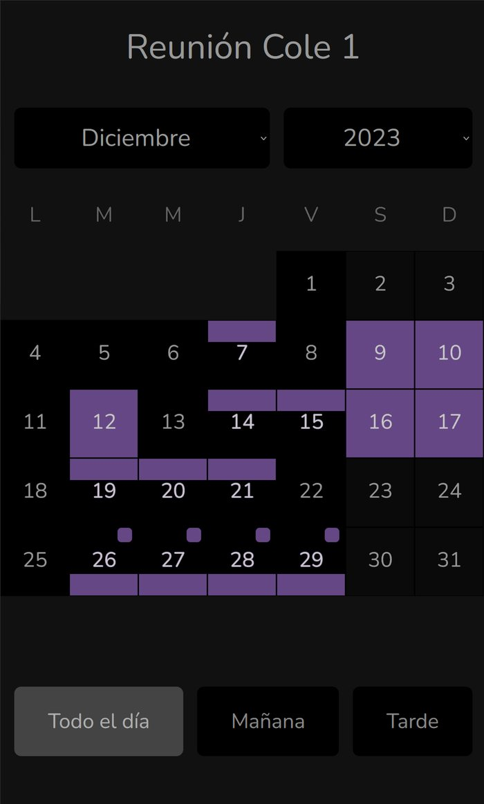

Dec 2, 2023
Don't you ever want to plan something (meeting, trip, party) among multiple people, and is really hard to agree on a date? maybe you try using WhatsApp, but that's horrific if many people is involved. Ok, why don't you use an online service like.. like what?
I don't know of any service that is free, doesn't require login and easily allows people announce their availability/preferences for a plan. Do you know any? I bet you don't.
So I tried myself:
You could set which days you are available the whole day, only in the morning or only in the afternoon.
I didn't go much further than that. No meeting creation, no database. Just a client mockup.
But I still think this would fulfill a need that still exists.